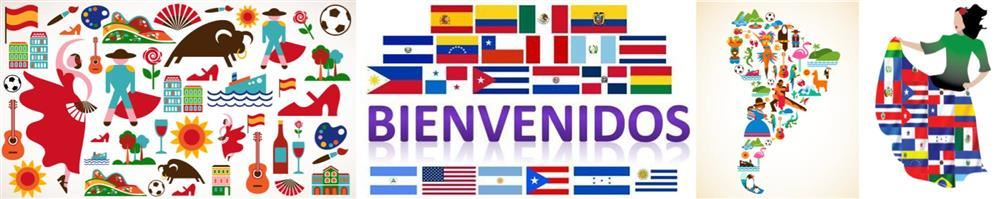

Spanish originated in the Iberian Peninsula and developed out of spoken Latin, also known as Vulgar Latin. Castilian Spanish was established as the dominant Spanish dialect at the height of the Reconquista, the reconquest of Spain from Muslim rule, and spread around the world thereafter. Various spoken Latin dialects expanded from the north of Spain as Christian kingdoms, the Spanish conquerors, missionaries, and explorers brought with them the Spanish language, spreading it to the Americas, Africa, Oceania, and Asia.
Modern Spanish is the product of its seven-hundred-year history since it emerged from spoken Latin. Nowadays, Spanish shows substantial Arabic influences and notable differences in grammar and vocabulary between various Spanish-speaking regions. Many Spanish words and names of places have Arabic origin. In fact, Andalusia, the southern-most region of Spain is derived from its Arabic name al-andalus.
Ms.James graduated from the University of the West Indies with a Bachelor of Arts in Latin American Studies. She's worked with several refugee camps as well as international relations to help bridge the gap between Latin/ Central America and the Caribbean.
Ms.Laloo is a bilingual speech specialist. She has a Master of Philosophy in Spanish with a minor in Interpreting Techniques and has studied in Costa Rica, Colombia, and Venezuela.
@$80.00 TT per session (Payment Options are available)
We understand that many of our current and future students may have different time zones and schedules, so we are more than able and happy to make our schedule flexible to meet your conditions.
| Mode of Sessions | Date | Time |
|---|---|---|
| Google Classroom & Meet | Wednesdays & Saturdays | 3:00 PM-4:30 PM (GMT-04:00 AST) |
| Zoom Meetings with Email updates | Thurdays & Fridays | 12:00 PM-1:30 PM (GMT-04:00 AST) |
| Microsoft teams | Sundays & Tuesdays | 5:00 PM-6:30 PM (GMT-04:00 AST) |